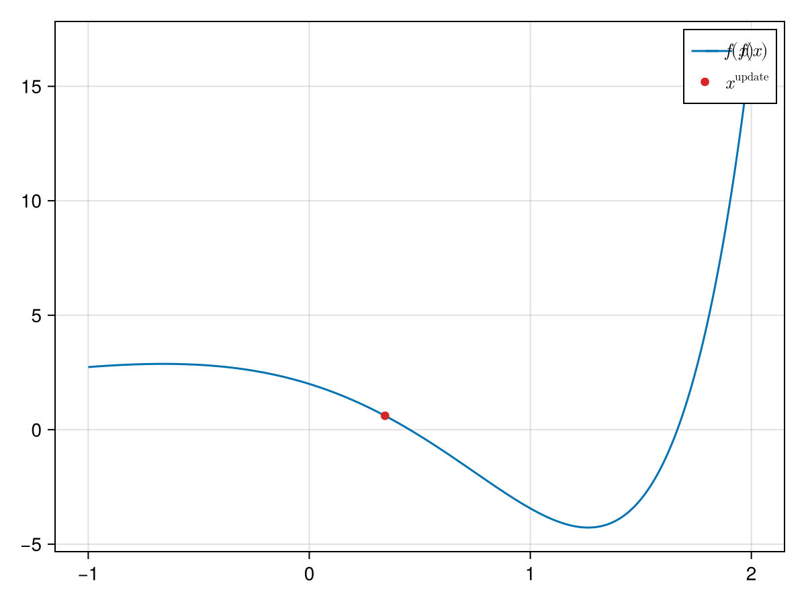
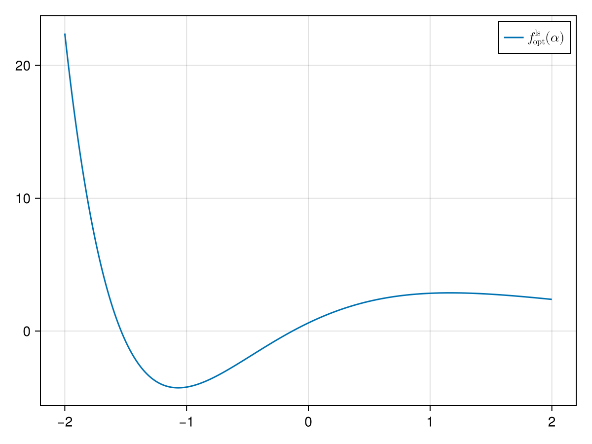
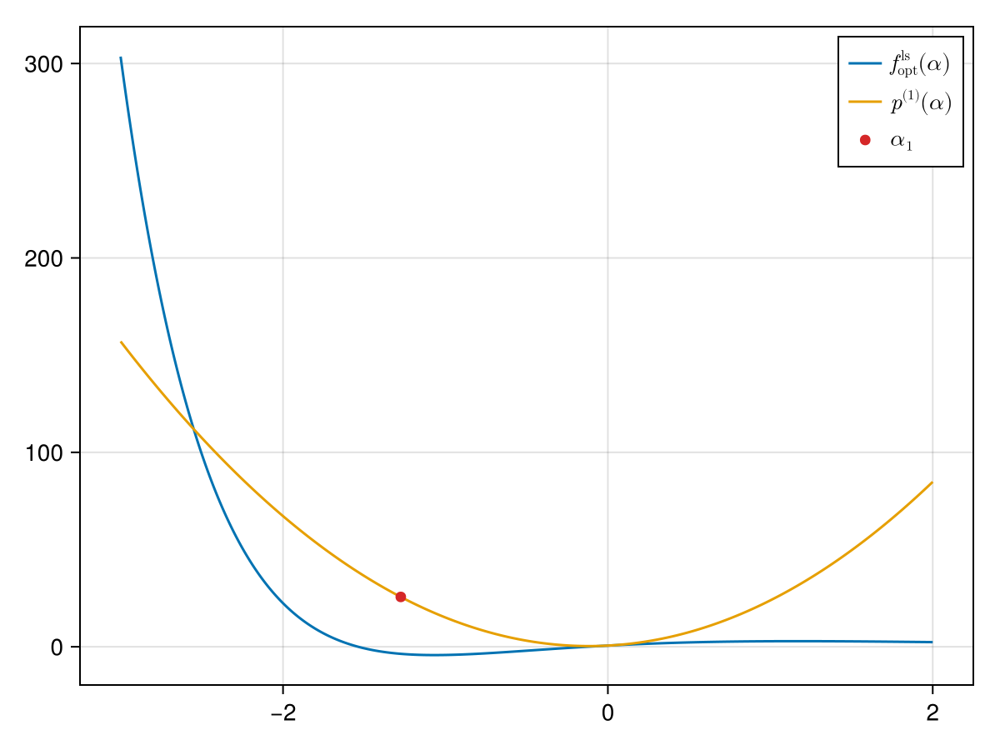
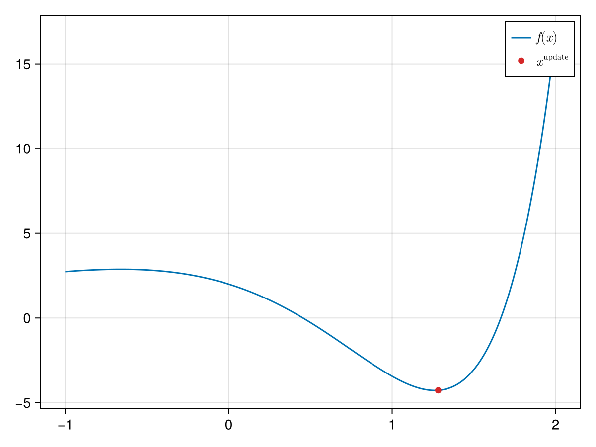
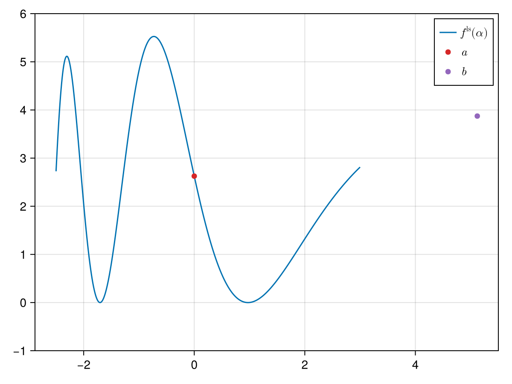
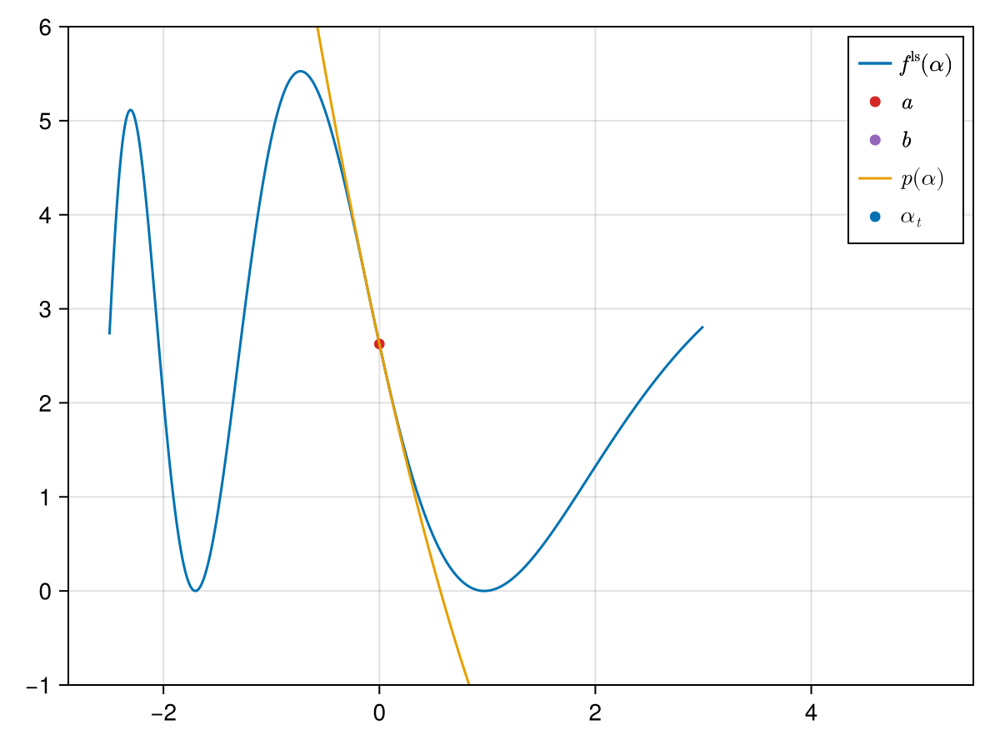

Quadratic Line Search
Quadratic line search is based on making a quadratic approximation to an optimizer problem and then pick the minimum of this quadratic approximation as the next iteration of $\alpha$.
The quadratic polynomial is built the following way[1]:
\[p(\alpha) = f^\mathrm{ls}(0) + (f^\mathrm{ls})'(0)\alpha + p_2\alpha^2,\]
and we also call $p_0:=f^\mathrm{ls}(0)$ and $p_1:=(f^\mathrm{ls})'(0)$. The coefficient $p_2$ is then determined the following way:
- take a value $\alpha$ (typically initialized as
SimpleSolvers.DEFAULT_ARMIJO_α₀) and compute $y = f^\mathrm{ls}(\alpha)$, - set $p_2 \gets \frac{(y - p_0 - p_1\alpha)}{\alpha^2}.$
After the polynomial is found we then take its minimum (analogously to the Bierlaire quadratic line search) and check if it satisfies the sufficient decrease condition. If it does not satisfy this condition we repeat the process, but with the current $\alpha$ as the starting point for the line search (instead of the initial SimpleSolvers.DEFAULT_ARMIJO_α₀).
Example
Here we treat the following problem:
f(x::Union{T, Vector{T}}) where {T<:Number} = exp.(x) .* (x .^ 3 - 5x + 2x) .+ 2one(T)
f!(y::AbstractVector{T}, x::AbstractVector{T}) where {T} = y .= f.(x)
F!(y::AbstractVector{T}, x::AbstractVector{T}, params) where {T} = f!(y, x)We now want to use quadratic line search to find the root of this function starting at $x = 0$. We compute the Jacobian of $f$ and initialize a line search problem:
using SimpleSolvers
function J!(j::AbstractMatrix{T}, x::AbstractVector{T}, params) where {T}
SimpleSolvers.ForwardDiff.jacobian!(j, f, x)
end
# allocate solver
solver = NewtonSolver(x, f(x); F = F!, DF! = J!)
# initialize solver
params = NullParameters()
state = NonlinearSolverState(x)
jacobian!(solver, x, params)
# compute rhs
F!(cache(solver).rhs, x, params)
rmul!(cache(solver).rhs, -1)
# multiply rhs with jacobian
factorize!(linearsolver(solver), jacobianmatrix(solver))
ldiv!(direction(cache(solver)), linearsolver(solver), cache(solver).rhs)
nlp = NonlinearProblem(F!, J!, x, f(x))
state = NonlinearSolverState(x)
params = (x = state.x, parameters = NullParameters())
update!(state, x, f(x))
ls_obj = linesearch_problem(nlp, jacobian(solver), cache(solver))
fˡˢ(alpha) = ls_obj.F(alpha, params)
∂fˡˢ∂α(alpha) = ls_obj.D(alpha, params)The second plot shows the optimization problem for the ideal step length, where we start from $x_0$ and proceed in the Newton direction. In the following we want to determine its minimum by fitting a quadratic polynomial, i.e. fitting $p$.
The first two coefficient of the polynomial $p$ (i.e. $p_1$ and $p_2$) are easy to compute:
p₀ = fˡˢ(0.)4.0p₁ = ∂fˡˢ∂α(0.)-8.0Initializing $\alpha$
In order to compute $p_2$ we first have to initialize $\alpha$. We start by guessing an initial $\alpha$ as SimpleSolvers.DEFAULT_ARMIJO_α₀. If this initial alpha does not satisfy the SimpleSolvers.BracketMinimumCriterion, i.e. it holds that $f^\mathrm{ls}(\alpha_0) > f^\mathrm{ls}(0)$, we call SimpleSolvers.bracket_minimum_with_fixed_point (similarly to calling SimpleSolvers.bracket_minimum for standard bracketing).
Looking at SimpleSolvers.DEFAULT_ARMIJO_α₀, we see that the SimpleSolvers.BracketMinimumCriterion is not satisfied:
We therefore see that calling SimpleSolvers.determine_initial_α returns a different $\alpha$ (the result of calling SimpleSolvers.bracket_minimum_with_fixed_point):
state = NonlinearSolverState(x)
update!(state, x, f(x))
params = (x = state.x, parameters = NullParameters())
α₀ = determine_initial_α(ls_obj, params, SimpleSolvers.DEFAULT_ARMIJO_α₀)1.28We can now finally compute $p_2$ and determine the minimum of the polynomial:
y = fˡˢ(α₀)
p₂ = (y - p₀ - p₁*α₀) / α₀^2
p(α) = p₀ + p₁ * α + p₂ * α^2
α₁ = -p₁ / (2p₂)0.5141386947276962
We now check wether $\alpha_1$ satisfies the sufficient decrease condition:
sdc = SufficientDecreaseCondition(DEFAULT_WOLFE_c₁, fˡˢ(0.), ∂fˡˢ∂α(0.), fˡˢ)
sdc(α₁)trueWe now move the original $x$ in the Newton direction with step length $\alpha_1$ by using SimpleSolvers.compute_new_iterate!:
compute_new_iterate!(x, α₁, direction(cache(solver)))1-element Vector{Float64}:
0.3427591298184641
And we see that we already very close to the root.
Example for Optimization
We look again at the same example as before, but this time we want to find a minimum and not a root. We hence use SimpleSolvers.linesearch_problem not for a NewtonSolver, but for an Optimizer:
using SimpleSolvers: NewtonOptimizerCache, initialize!, gradient
x₀, x₁ = [0.], x
obj = OptimizerProblem(sum∘f, x₀)
grad = GradientAutodiff{Float64}(obj.F, length(x))
_cache = NewtonOptimizerCache(x₀)
state = NewtonOptimizerState(x₀)
params = (x = state.x̄,)
hess = HessianAutodiff(obj, x₀)
H = SimpleSolvers.alloc_h(x)
hess(H, x₀)
update!(_cache, state, grad, hess, x₀)
hess(H, x₁)
update!(_cache, state, grad, hess, x₁)
ls_obj = linesearch_problem(obj, grad, _cache)
fˡˢ(alpha) = ls_obj.F(alpha, params)
∂fˡˢ∂α(alpha) = ls_obj.D(alpha, params)
Note the different shape of the line search problem in the case of the optimizer, especially that the line search problem can take negative values in this case!
We now again want to find the minimum with quadratic line search and repeat the procedure above:
p₀ = fˡˢ(0.)2.0p₁ = ∂fˡˢ∂α(0.)2.580513458786253params = (x = state.x̄, parameters = NullParameters())
α₀ = determine_initial_α(ls_obj, params, SimpleSolvers.DEFAULT_ARMIJO_α₀)
y = fˡˢ(α₀)
p₂ = (y - p₀ - p₁*α₀) / α₀^2
p(α) = p₀ + p₁ * α + p₂ * α^2
α₁ = -p₁ / (2p₂)-0.1988165696410768
We now again move the original $x$ in the Newton direction with step length $\alpha_1$:
compute_new_iterate!(x, α₁, direction(_cache))1-element Vector{Float64}:
0.5137754077479685We make another iteration:
hess(H, x)
update!(_cache, state, grad, hess, x)
ls_obj = linesearch_problem(obj, grad, _cache)
fˡˢ(alpha) = ls_obj.F(alpha, params)
∂fˡˢ∂α(alpha) = ls_obj.D(alpha, params)
p₀ = fˡˢ(0.)
p₁ = ∂fˡˢ∂α(0.)
params = (x = state.x̄, parameters = NullParameters())
α₀⁽²⁾ = determine_initial_α(ls_obj, params, SimpleSolvers.DEFAULT_ARMIJO_α₀)
y = fˡˢ(α₀)
p₂ = (y - p₀ - p₁*α₀⁽²⁾) / α₀⁽²⁾^2
p(α) = p₀ + p₁ * α + p₂ * α^2
α₂ = -p₁ / (2p₂)-0.003921611731926922
We now update $x$:
using SimpleSolvers: compute_new_iterate
x .= compute_new_iterate(x, α₂, direction(_cache))1-element Vector{Float64}:
0.5189490483419136We finally compute a third iterate:
hess(H, x)
update!(_cache, state, grad, hess, x)
ls_obj = linesearch_problem(obj, grad, _cache)
fˡˢ(alpha) = ls_obj.F(alpha, params)
∂fˡˢ∂α(alpha) = ls_obj.D(alpha, params)
p₀ = fˡˢ(0.)
p₁ = ∂fˡˢ∂α(0.)
params = (x = state.x̄, parameters = NullParameters())
α₀⁽³⁾ = determine_initial_α(ls_obj, params, SimpleSolvers.DEFAULT_ARMIJO_α₀)
y = fˡˢ(α₀)
p₂ = (y - p₀ - p₁*α₀⁽³⁾) / α₀^2
p(α) = p₀ + p₁ * α + p₂ * α^2
α₃ = -p₁ / (2p₂)-0.014195098040992104x .= compute_new_iterate(x, α₃, direction(_cache))1-element Vector{Float64}:
0.5380119559453095
Example II
Here we consider the same example as when discussing the Bierlaire quadratic line search.
state = NonlinearSolverState(x)
update!(state, x, f(x))
params = (x = state.x, parameters = NullParameters())
ls_obj = linesearch_problem(nlp, JacobianFunction{Float64}(F!, J!), cache(solver))
fˡˢ(alpha) = ls_obj.F(alpha, params)
∂fˡˢ∂α(alpha) = ls_obj.D(alpha, params)We now try to find a minimum of $f^\mathrm{ls}$ with quadratic line search. For this we first need to find a bracket; we again do this with SimpleSolvers.bracket_minimum_with_fixed_point[2]:
(a, b) = SimpleSolvers.bracket_minimum_with_fixed_point(fˡˢ, ∂fˡˢ∂α, 0.)(0.0, 1.28)We plot the bracket:
using CairoMakie
mred = RGBf(214 / 256, 39 / 256, 40 / 256)
mpurple = RGBf(148 / 256, 103 / 256, 189 / 256)
mgreen = RGBf(44 / 256, 160 / 256, 44 / 256)
mblue = RGBf(31 / 256, 119 / 256, 180 / 256)
morange = RGBf(255 / 256, 127 / 256, 14 / 256)
fig = Figure()
ax = Axis(fig[1, 1])
alpha = -2:.01:6.
lines!(ax, alpha, fˡˢ.(alpha); label = L"f^\mathrm{ls}(\alpha)")
scatter!(ax, a, fˡˢ(a); color = mred, label = L"a")
scatter!(ax, b, fˡˢ(b); color = mpurple, label = L"b")
axislegend(ax)
save("f_ls_1.png", fig)
We now build the polynomial:
p₀ = fˡˢ(a)
p₁ = ∂fˡˢ∂α(a)
y = fˡˢ(b)
p₂ = (y - p₀ - p₁*b) / b^2
p(α) = p₀ + p₁ * α + p₂ * α^2and compute its minimum:
αₜ = -p₁ / (2p₂)1.0063463859825368lines!(ax, alpha, p.(alpha); label = L"p(\alpha)")
scatter!(ax, αₜ, p(αₜ); label = L"\alpha_t")
axislegend(ax)
save("f_ls_2.png", fig)
We now set $a \gets \alpha_t$ and perform another iteration:
(a, b) = SimpleSolvers.bracket_minimum_with_fixed_point(fˡˢ, ∂fˡˢ∂α, αₜ)(0.9363463859825367, 1.0163463859825368)We again build the polynomial:
p₀ = fˡˢ(a)
p₁ = ∂fˡˢ∂α(a)
y = fˡˢ(b)
p₂ = (y - p₀ - p₁*(b-a)) / (b-a)^2
p(α) = p₀ + p₁ * (α-a) + p₂ * (α-a)^2and compute its minimum:
αₜ = -p₁ / (2p₂) + a0.9726800175181818- 1This is different from the Bierlaire quadratic polynomial described in [2].
- 2Here we use
SimpleSolvers.bracket_minimum_with_fixed_pointdirectly instead of usingSimpleSolvers.determine_initial_α.